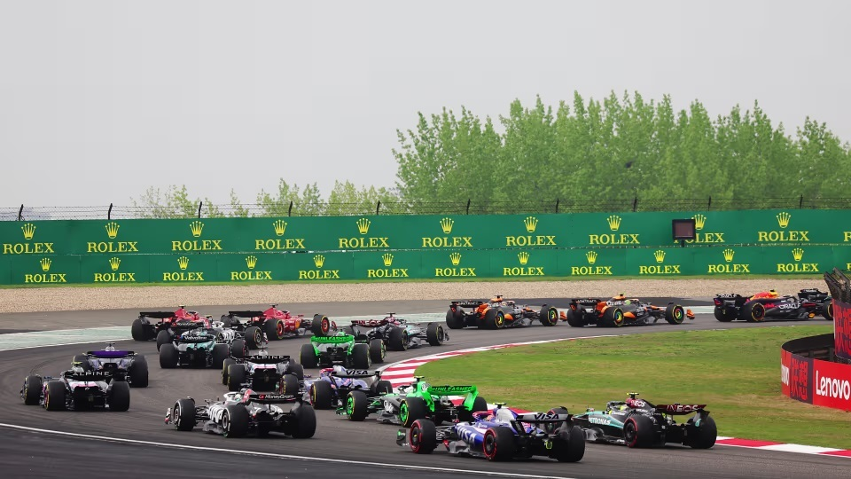

Fórmula 1, F1 o Fórmula Uno, es la principal competición de automovilismo internacional y el campeonato de deportes de motor más popular y prestigioso del mundo. La entidad que la dirige es la Federación Internacional del Automóvil (FIA). Desde septiembre de 2016, tras la adquisición de Formula One Group, la empresa estadounidense Liberty Media es la responsable de gestionar y operar el campeonato.
A cada carrera se le denomina Gran Premio y el torneo que las agrupa es el Campeonato Mundial de Fórmula 1. La mayoría de los circuitos de carreras donde se celebran los Grandes Premios son autódromos, aunque también se utilizan circuitos callejeros y anteriormente se utilizaron circuitos ruteros. A su vez, los automóviles utilizados son monoplazas con la última tecnología disponible, siempre limitadas por un reglamento técnico; algunas mejoras que fueron desarrolladas en la Fórmula 1 terminaron siendo utilizadas en automóviles comerciales, como el freno de disco.
El inicio de la Fórmula 1 moderna se remonta al año 1950, en el que participaron escuderías como Ferrari, Alfa Romeo y Maserati. Algunas fueron reemplazadas por otras nuevas como McLaren, Williams, Red Bull y otras que volvieron como Mercedes se han alzado varias veces con el Campeonato Mundial de Constructores. Por su parte, los pilotos deben contar con la superlicencia de la FIA para competir, que se obtiene por los resultados en otros campeonatos.
El primer Campeonato Mundial de Pilotos fue otorgado en la temporada 1950 a Giuseppe Farina. El primer piloto en ganar más de un campeonato fue Alberto Ascari en 1952 y 1953.
En 1945, inmediatamente después de la Segunda Guerra Mundial, sólo hubo cuatro carreras. Antes de la Segunda Guerra Mundial se habían establecido las reglas para las competiciones de Grand Prix, que debían obedecer tanto autos como pilotos. Estas reglas, conocidas en su conjunto como Fórmula, no se concretaron hasta que en 1947 la antigua AIACR se reorganizó, pasándose a llamar la Federación Internacional del Automóvil, conocida por las siglas "FIA". Con sede central en París, al final de la temporada de 1949 anunció que para 1950 unirían varios Grandes Premios nacionales para crear un Campeonato Mundial de Pilotos, por lo que en 1950 se celebró el primer campeonato de Fórmula 1.
La puntuación actual en un Gran Premio se distribuye de la siguiente manera: el ganador de la prueba conseguirá 25 puntos; el segundo clasificado, 18; el tercero, 15; el cuarto, 12; el quinto, 10; el sexto, 8; el séptimo, 6; el octavo, 4; el noveno, 2; y el décimo, 1 punto. Durante décadas, la puntuación ha determinado el orden en la clasificación del campeonato del mundo de pilotos y de constructores, pues quien tuviera más puntos sería el campeón, y en caso de empate decidirían las mejores posiciones en carrera. En el caso de los constructores, la suma de los puntos de sus pilotos determina los puntos totales del equipo y la posición del mismo en el campeonato.